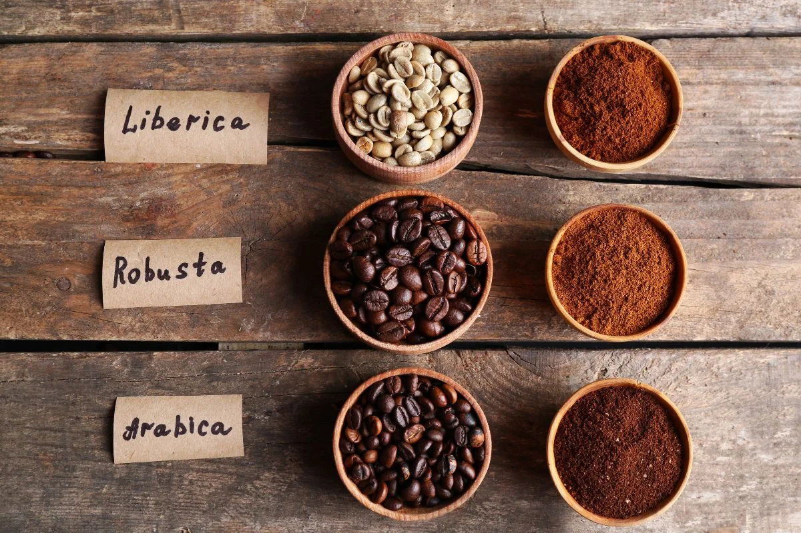

Koffie vindt zijn oorsprong in Ethiopië, waar volgens de legende een herder genaamd Kaldi rond de 9e eeuw de opwekkende kracht van de koffiebonen ontdekte. Vanuit Ethiopië verspreidde koffie zich via Jemen naar de Arabische wereld, waar koffiehuizen al snel een belangrijk cultureel middelpunt werden. In de 17e eeuw bereikte koffie Europa en groeide het uit tot een van de populairste dranken ter wereld.
- Arabica
- Robusta
- Liberica
- Excelsa
